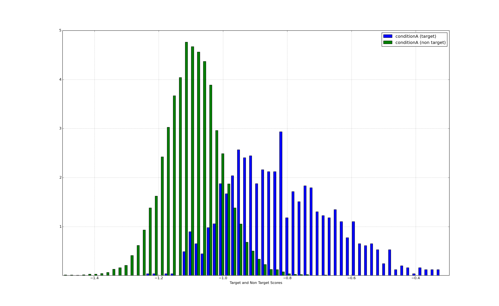

Histogram¶
Nothing much to say about histograms. Here is an example:
Run this command:
python ./bioplot.py -e "condition A" -f input/testdata_A.txt -H

You can set the number of bins used in bioplot.cfg:
[histogram]
nrBins = 150
The window showing the plot allows one to zoom in as shown in this example:
Bioplot can produce cumulative plots as well. But they do not look very nice. Have a look at EER plot, this looks much nicer and in fact shows the same information.
Run this command:
python ./bioplot.py -e "condition A" -f input/testdata_A.txt -C